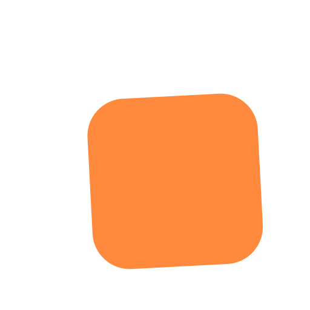

Manual de marca
Cómo se ve, cómo habla y cómo se arma cualquier cosa que lleve esta marca. Si algo no está acá, se resuelve con el criterio de estas páginas.
1 · La idea
Respaldar es estar detrás de alguien. Por eso el símbolo son dos capas: la de adelante, cálida, es el negocio del cliente. La de atrás, en tinta, somos nosotros sosteniéndolo. Nunca al revés.

2 · El logo
isotipo.svg sobre fondo claro; isotipo-oscuro.svg sobre tinta o foto.3 · Los colores
Esta es la regla que sostiene todo: si el lima aparece en un botón o el cálido en un dato, la página pierde el idioma.
#0F2A4ALa base. Fondos serios.#FF8A3DLA ACCIÓN. Todo botón.#C8EE3DLA ENERGÍA. Datos que saltan.#586B7ETexto secundario.#16385FSolo para el degradé.#C2540BCálido sobre blanco.#6F8C0ELima sobre blanco.#EEF2F7Franjas claras.| Combinación | Ratio | Estado |
|---|---|---|
| Blanco sobre tinta | 14,5:1 | AAA |
| Blanco sobre cálido | 3,0:1 | solo texto grande y botones |
| Gris claro sobre tinta | 7,6:1 | AAA |
| Gris sobre blanco | 5,5:1 | AA |
| Lima sobre tinta | 10,9:1 | AAA |
El cálido con texto blanco solo se usa en botones y títulos grandes.
Para texto chico sobre blanco va --calido-osc.
4 · La letra
Peso 800, solo para títulos y el logo. Tiene carácter: se nota que alguien la eligió. Espaciado apretado (−.025em).
Pesos 400 a 800, para todo el texto, botones y datos. Redonda, clara y liviana de cargar.
hyphens:auto. Los títulos nunca se justifican.ch, no en píxeles.5 · La voz
6 · La composición
7 · Los archivos
| Archivo | Para qué |
|---|---|
marca/isotipo.svg | Símbolo sobre fondo claro |
marca/isotipo-oscuro.svg | Símbolo sobre tinta o foto |
favicon.svg | Pestaña del navegador, con su fondo |
og.png | La tarjeta que se ve al compartir el link |
og-fuente.html | De donde sale el og.png (se regenera con Edge) |
marca/fuente-logos.html | De donde salen los PNG del logo |